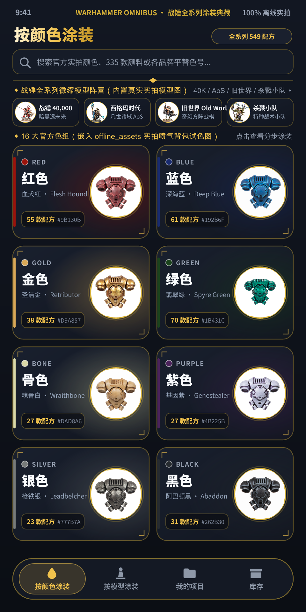
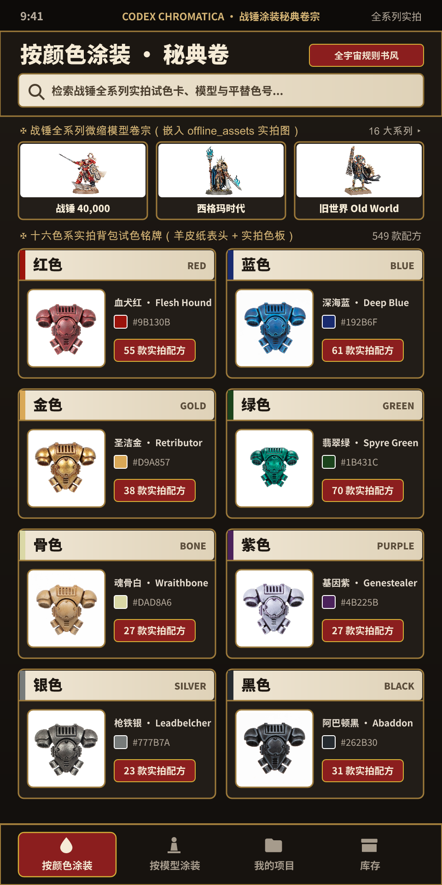
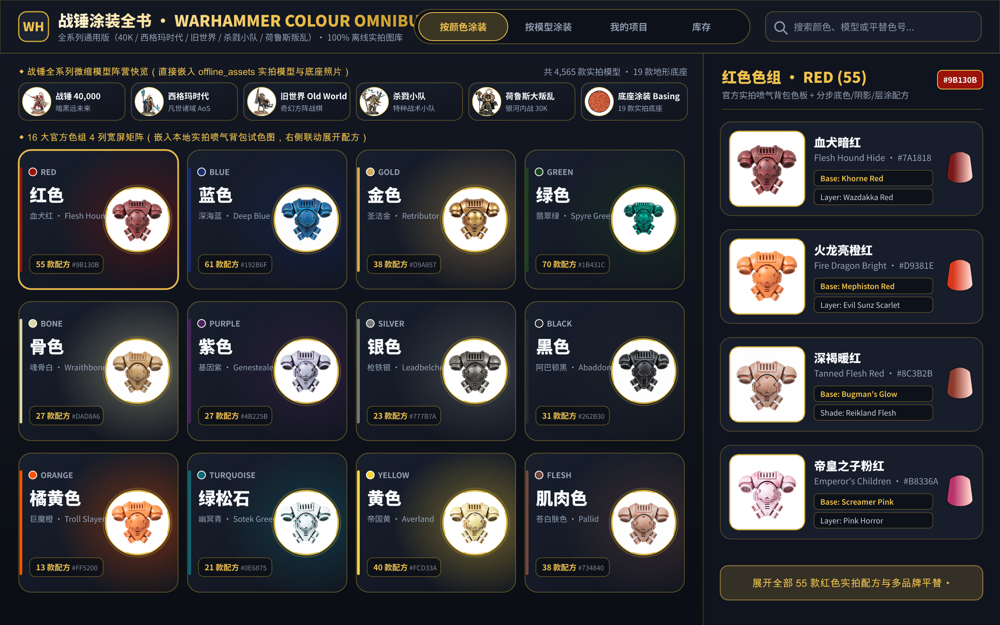

战锤涂装全书
Hammer Color · 离线版 3.45.0 · Android 7.0+
《Warhammer Colour》的完整离线汉化版。收录战锤全系列（Warhammer 40,000、Age of Sigmar、 The Old World、Kill Team、Horus Heresy、Necromunda、Warcry、Underworlds）的真实实拍涂装资料， 16 大色系、4500+ 款模型、19 款底座与 3 万余条涂装指引全部内置。 无需登录、无需联网，打开即可离线查阅。
下载安装包
单一 APK 包含全部离线素材，无需另外下载数据包。下载完成后点击 APK 文件安装即可。
com.gamesworkshop.citadelpaint 或早期构建
com.myhobby.whcolor，需先卸载，否则会提示 INSTALL_FAILED_UPDATE_INCOMPATIBLE；
③ 本版包名为 com.myhobby.whcolor，与官方版可并存安装；
④ 首次启动约需 20 秒建立 6451 张离线素材的索引，属正常现象。
主要能力
四个直达标签栏
底部导航重构为「按颜色涂装 / 按模型涂装 / 我的项目 / 库存」四个直达入口，点哪个直接进哪个栏目，一级与二级首页磁贴全部去掉，减少层级。
真实实拍涂装配方
16 大色系、每款颜色都配有官方实拍的喷气背包试色照片，配合 Base / Layer / Shade 分步配方胶囊与内置渐变漆罐图标，还原每一款颜色的底色、渍洗与高光笔触。
全系列模型与底座
收录 Warhammer 40,000、Age of Sigmar、The Old World、Kill Team、Horus Heresy、Necromunda、Warcry、Underworlds 的 4500+ 款模型，以及 19 款地形底座涂装。
涂装指引 PDF 导出
指引页顶栏提供导出按钮，生成含 logo、模型名、底色 / 阴影 / 薄涂 / 喷漆分节、漆罐图与复选框的可打印 PDF，便于带到桌边照着涂。
界面完整汉化
308 条界面文案完成汉化（其中 285 条含中文），并内置 Noto Sans SC 中文字体子集；漆色名、模型名与底座名沿用官方英文，其余界面文字全部为中文。
视觉重设计
页面底色改为黑曜石深色、标题字号收敛、去掉刺眼的高饱和黄与多余装饰线，状态栏与导航栏统一深色；字体由衬线体换成现代无衬线体。
宽屏适配
解除竖屏锁定，平板横屏下「按模型涂装」的阵营网格由 2 列动态变为 4–5 列，手机竖屏仍保持 2 列；各栏顶栏不再出现多余的返回箭头。
完全离线
启动即进入「按颜色涂装」，无登录页、无 Home、无 Profile；外部网络请求数为 0，所有素材解压后从设备本地读取。
界面预览
手机竖屏与平板横屏两套专属布局，均使用真实离线实拍素材渲染。



内置数据一览
| 数据项 | 数量 | 说明 |
|---|---|---|
| 真实实拍图片 | 6451 张 | 549 张背包试色图 + 4565 张模型图 + 19 张底座图 |
| 色系 | 16 组 | 每个色系含完整色卡与分步配方 |
| 模型 | 4500+ 款 | 覆盖战锤全系列阵营与单位 |
| 底座 | 19 款 | 地形底座涂装方案 |
| 涂装指引 | 3 万余条 | 可导出为带分节与复选框的 PDF |
| 汉化文案 | 308 条 | 界面字符串 + 3 组 plurals + 1 组 arrays |
运行要求
- Android 7.0（API 24）或更高版本
- arm64-v8a 设备（主流手机与平板）
- 约 1.2 GB 存储空间
- 建议使用平板横屏获得更宽的阵营网格
- 无需账号、无需联网